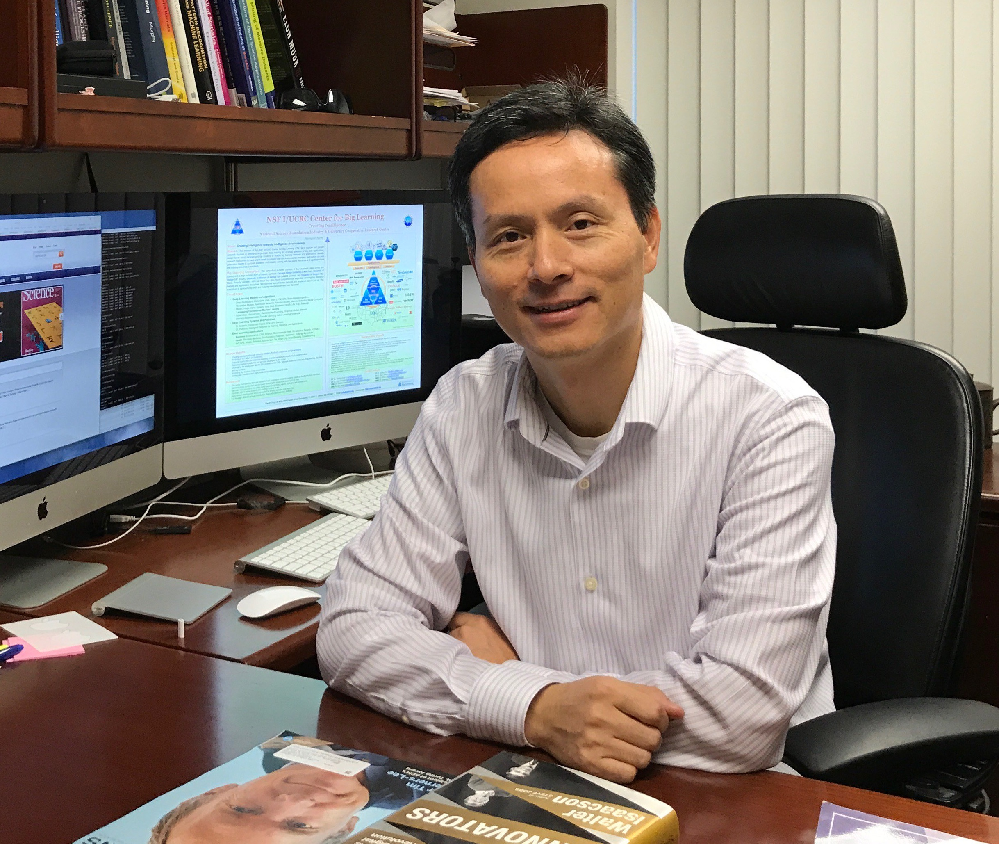

What's News
Dr. Xiaolin Andy Li is Chief Scientist and Director of Center for AI and Intelligent Medicine, Institute of Basic Medicine and Cancer Research (IBMC), Chinese Academy of Sciences. He was a Partner of Tongdun Technology (an AI unicorn), heading the AI Institute and the Cognization Lab, located at Palo Alto Square, near Stanford University. He was a tenured Full Professor and Area Chair of Computer Engineering Division at the University of Florida.
The Institute of Basic
Medicine and Cancer (IBMC) is the Chinese Academy of
Sciences’ first institute explicitly devoted to the research and
development of medicine. By partnering with the Zhejiang Cancer
Hospital, we address real medical problems. IBMC is home to a
highly collaborative group of scientists and medical doctors who
work on solving fundamental questions in the fields of omics and
oncology for the advancement of diagnostics and therapeutics. With
a focus on clinical needs and problems, IBMC is committed to
solving fundamental issues in tumor diagnosis, targeted treatment,
novel drug R&D, and smart healthcare, as well as basic and
applied research related to the diagnosis, treatment, prevention
and control of major diseases. We aim to be a world-class tumor
medicine research center integrating advanced disciplines,
training programs for talents, and an incubator for industry
applications. IBMC is also the first national life and health
research institute introduced in beautiful Zhejiang Province.
Through our strategic collaborations, our talented team strives to
make fundamental breakthroughs in cancer diagnostics and
treatment.
Dr. Xiaolin Andy Li was a
tenured Full Professor and University Term Professor in Computer
Engineering at the University of Florida. As the founding center
director, he founded NSF Center for Big Learning (CBL) with UF,
CMU, UMKC and U. Oregon and three dozens of leading companies as
industry members, the first national center on deep learning in
USA. He was also the director of Large-scale Intelligent Systems
Laboratory (Li Lab). His research interests include machine
learning/deep learning, intelligent platform, cloud computing,
security & privacy, intelligent medicine, and drug discovery. He led the design and
deployment of one of the first software-defined 100G campus
research networks and campus clouds GatorCloud, the best campus
research network in the nation. His team designed and developed
many platforms and tools, such as DeepCloud, CognitiveEngine,
DeepEyes, OneTask, DeepSLAM, CloudBay, SMART, GemsCloud, Guoguo,
FindingNemo, ToGathor, DeepDDoS, DeepMalware, S3PAS, FoldingZero,
DeepFolding, PrimateAI, DeepCancer, MySurgeryRisk and DeepDrug. He
received NSF
CAREER Award, the NSF I-Corps Top Team Award, Top Team
Award (DeepBipolar) in the CAGI Challenge, and Best Paper Awards
(IEEE ICMLA 2016, IEEE SECON 2016, ACM CAC 2013, and IEEE UbiSafe
2007). He has published over 150 peer-reviewed papers and dozens
of patent applications. He received PhD in Computer Engineering
from Rutgers University.
University of Florida
(UF) is a member of AAU (Association of American Universities),
composed of 65 leading universities in North America (USA and
Canada). U.S. News and World Report recently ranked
UF
No. 5 among the top national public universities and ranked
UF
College of Pharmacy No. 5 in USA.
Research Interests: Deep Learning/Machine Learning, Reinforcement Learning, Intelligent Platforms, Cloud Computing, Security & Privacy, Intelligent Medicine, Drug Discovery
IEEE Email: xiaolinli or andyli @ aimlab.cc